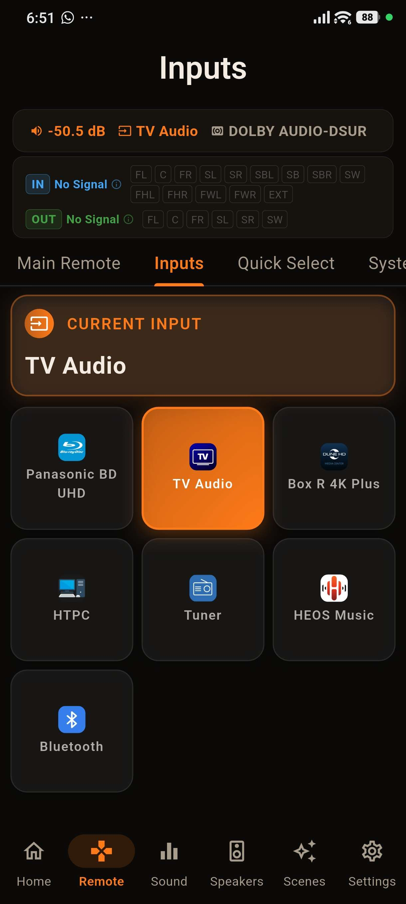

Full D-pad and transport control with a live header that shows the input, sound mode, and the actual channels in use - so you always know what your Denon or Marantz is doing. Four pages: swipe or tap the page tabs.


Stock icons are fine - until your Shield, your HTPC and your Blu-ray player all deserve their real faces. Give any input its own icon from any image you have.

On the Mac App Store and Microsoft Store builds you can drive playback and volume straight from the keyboard - no reaching for the mouse. Use Cmd on macOS or Ctrl on Windows, and your keyboard's dedicated media keys work too. Nothing fires while you're typing in a text field, so renaming an input or entering an IP is never interrupted.
| Shortcut | Action |
|---|---|
| Cmd + Space / Ctrl + Space | Play / Pause |
| Cmd + . / Ctrl + . (period) | Stop |
| Cmd + Right / Ctrl + Right | Next track |
| Cmd + Left / Ctrl + Left | Previous track |
| Cmd + Up / Ctrl + Up | Volume up |
| Cmd + Down / Ctrl + Down | Volume down |
| Cmd + M / Ctrl + M | Toggle mute |
| Media keys: Play, Pause, Play/Pause, Stop | The matching transport action |
| Media keys: Next Track, Previous Track | Skip to next / previous track |
| Media keys: Volume Up, Volume Down, Mute | Volume up, volume down, mute |
One-time purchase, no ads, no subscriptions. Connect in under a minute.